Interpolation mit ImageResize
Wirkung der Algorithmen
Stretch

Box
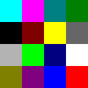
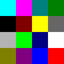
Linear
Half Cosine
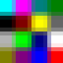
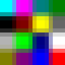
Cosine
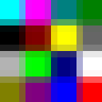
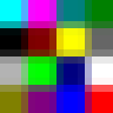
Bicubic
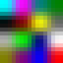
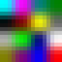
Mitchell
Spline
Lanczos 2
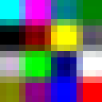
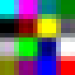
Lanczos 3
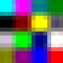
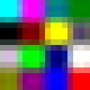
Lanczos 4
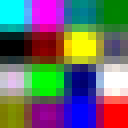
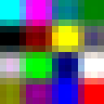
Wirkung beim Hochskalieren
(Ohne Bild) Best Quality verwendet abhängig vom Herauf- oder Herunterskalieren Spline bzw. Mitchell
Stretch ist kein Filter, sondern ein Strecken der Pixel ohne Interpolation

BoxEquivalent zum Stretch mit hoher Qualität und pixelzentrierten Koordinaten
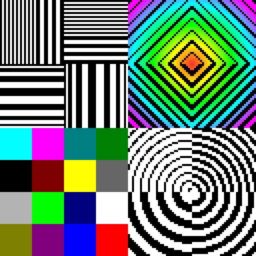
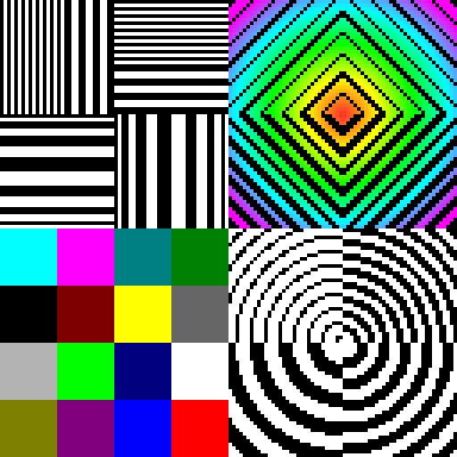
Linear Lineare Interpolation ergibt einen Übergang zwischen den Pixeln
Half Cosine Mischung aus Linear und Cosine ergibt einen mittleren Übergang zwischen den Pixeln
Cosine Cosinus-artiger Interpolation ergibt einen schnelleren Übergang zwischen den Pixeln
Bicubic Simpler bi-kubischer filter (verschwommen)
Mitchell Der Mitchell-Filter ist eine gute Interpolation fürs Herunterskalieren.
Spline Guter Filter für das Heraufskalieren
Lanczos 2 Lanczos-Filter mit Radius 2 und Unschärfe-Korrektur
Lanczos 3 Lanczos-Filter mit Radius 3, hoher Kontrast
Lanczos 4 Lanczos-Filter mit Radius 4, hoher Kontrast
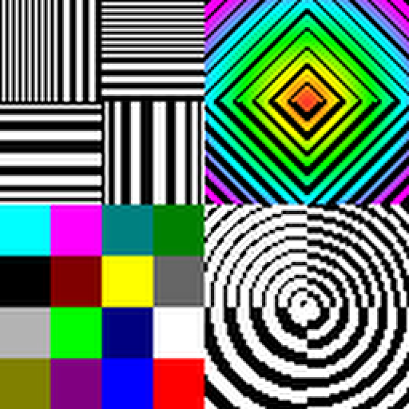
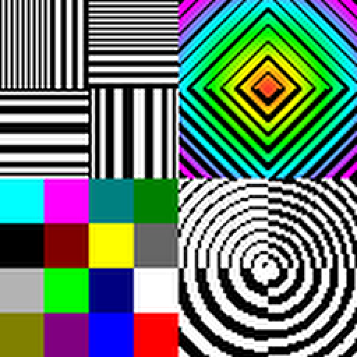
Wirkung beim Herunterskalieren
Stretch ist kein Filter, sondern ein Strecken der Pixel ohne Interpolation
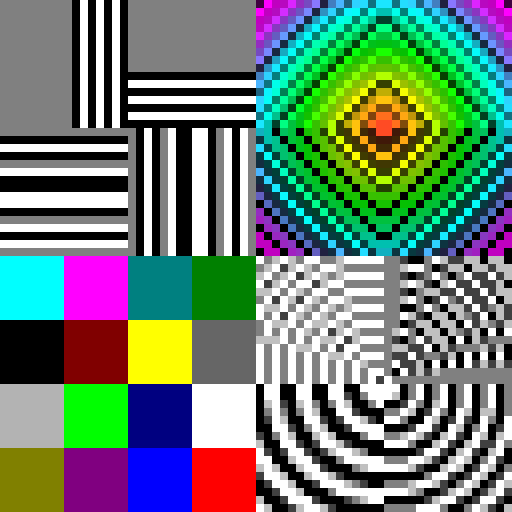
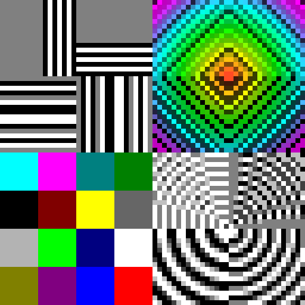
BoxEquivalent zum Stretch mit hoher Qualität und pixelzentrierten Koordinaten
Linear Lineare Interpolation ergibt einen Übergang zwischen den Pixeln

Half Cosine Mischung aus Linear und Cosine ergibt einen mittleren Übergang zwischen den Pixeln

Cosine Cosinus-artiger Interpolation ergibt einen schnelleren Übergang zwischen den Pixeln

Bicubic Simpler bi-kubischer filter (verschwommen)
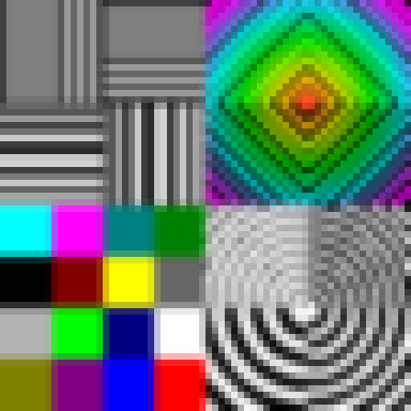
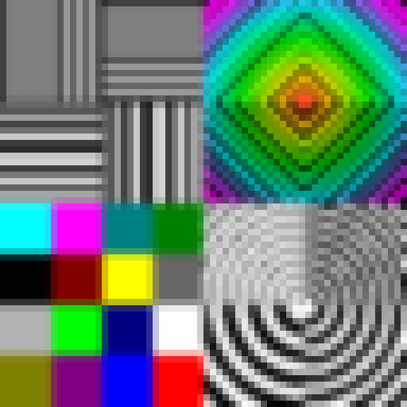
Mitchell Der Mitchell-Filter ist eine gute Interpolation fürs Herunterskalieren.
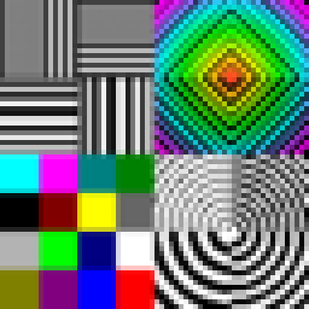
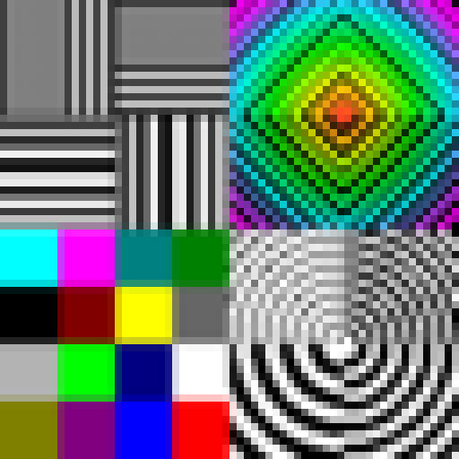
Spline Guter Filter für das Heraufskalieren
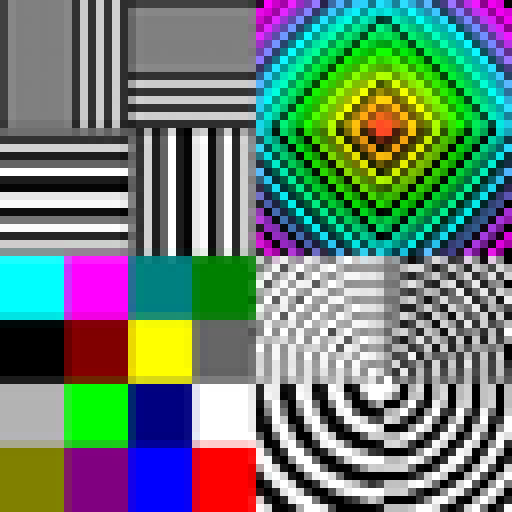
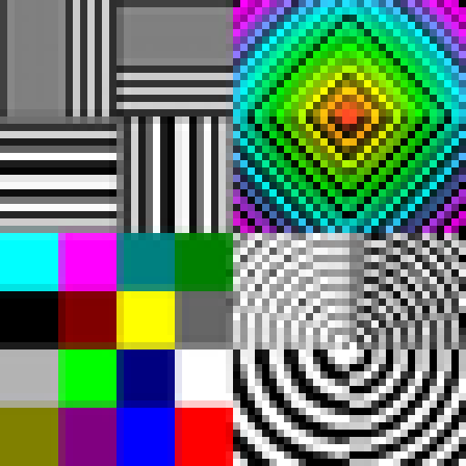
Lanczos 2 Lanczos-Filter mit Radius 2 und Unschärfe-Korrektur
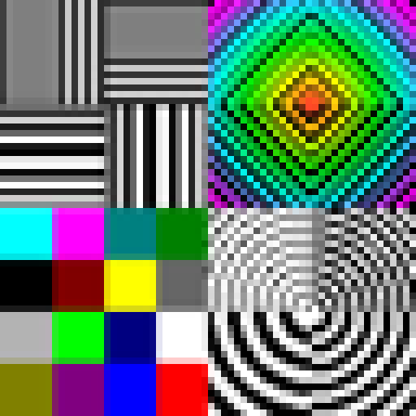
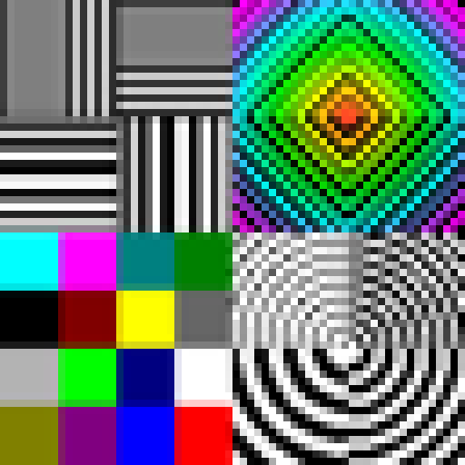
Lanczos 3 Lanczos-Filter mit Radius 3, hoher Kontrast
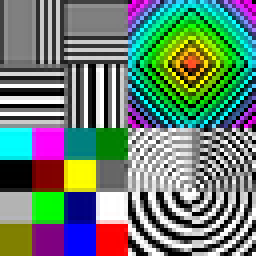
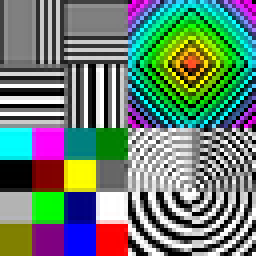
Lanczos 4 Lanczos-Filter mit Radius 4, hoher Kontrast
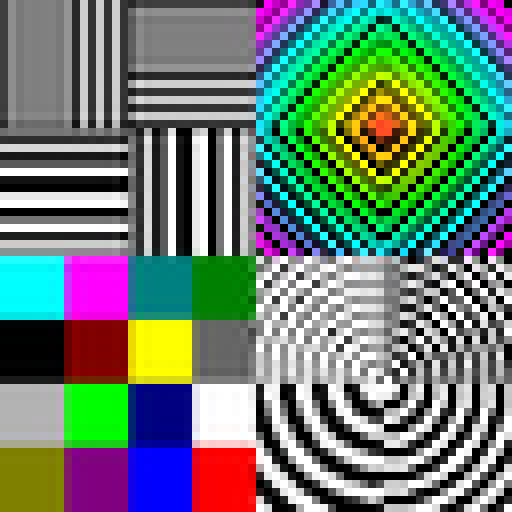
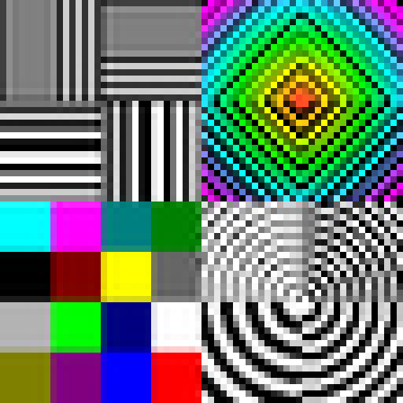